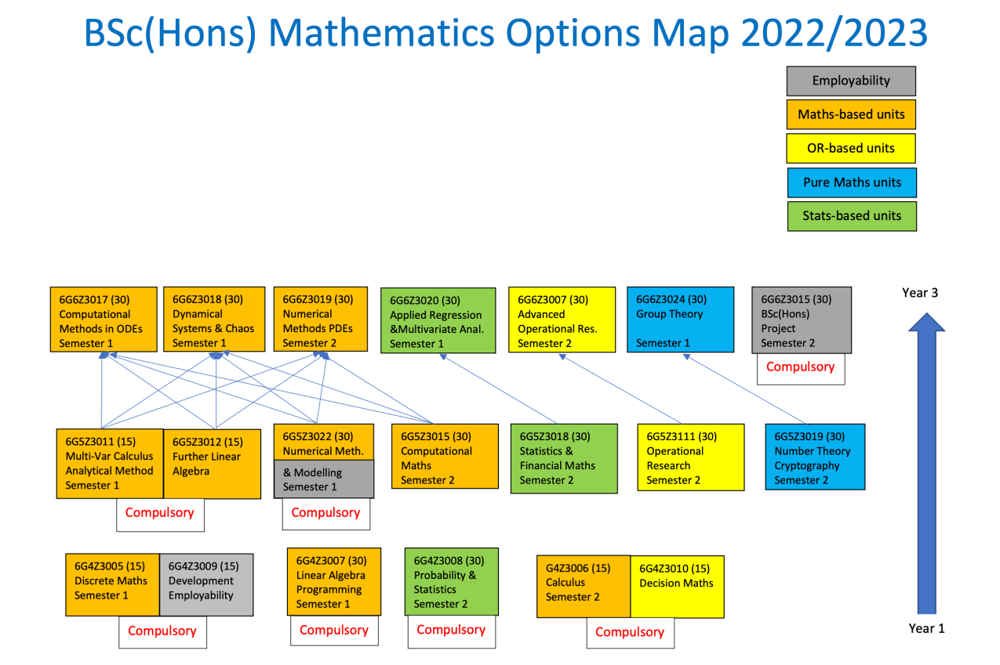

Level 5 Mathematics
Induction Meeting for 2024/25
Killian O’Brien
Wednesday 25th September 2024
Welcome back to level 5 of Mathematics

Careers, employability and placements
It’s never too early to be thinking about life after you graduate. The university has a range of resources to help students prepare for their future. See the main Careers part of the university website for further information.
MyCareerHub is the place to go for graduate, placement and internship vacancies and employment related events taking place in or near the university or online.
An important upcoming event
A placement is where a student works with an employer for the year between the second and third years of their degree.
- Placements section of the Careers website.
- Get Placed 2024 - focused events in semester one to help you succeed in your placement search and application.
Institute of Mathematics and its Applications

- The IMA is one of the main professional bodies for mathematicians in the UK.
- A great resource of mathematics and career information.
- Events, publications, awards etc
- Reduced rate student membership for £10 or use the free IMA eStudent scheme.
- IMA website
Programme leader
- Our new Programe Leader: Dr Saeed Abu-Zour

- Mathematics subject group staff pages
Your wellbeing and support
- Lots of information on the Wellbeing pages

Contacting the Student Hub
- Ask us about things specific to your course.
- The Student Hub in the Business School deals with general university enquiries.
The Student Hub can be busy in the first few weeks so do try and access their online provision in the first instance
Personal Tutors
Personal tutors
- You will have been allocated a personal tutor
- Your Personal tutor will be contacting you very soon, if not already. Keep an eye on your emails.
- Personal tutors provide support to guide you through your academic studies and support the development of your wider skills.
Your attendance
- mmu.ac.uk/attendance
- If your attendance and course engagement is too low you will be contacted by the university.
- If contacted make sure you respond.

Future Me week
- Future Me information.

RISE at Man Met
- RISE information.

Your Student Union
- The Union website.

The Course Rep role
- Course Reps information.

The academic year
- Note dates of assessment weeks. You must be present for these weeks.
- Note that all 11 teaching weeks of Semester Two take place before the Easter/Spring break.

The units
Semester 1 | Core units
- 6G5Z3011 - MULTI-VARIABLE CALCULUS ANALYTICAL METHODS (15 credits)
- 6G5Z3012 - FURTHER LINEAR ALGEBRA (15 credits)
- 6G5Z3022 - NUMERICAL METHODS AND MODELLING (30 credits)
Semester 2 | Optional units
Each student does two from:
- 6G5Z3015 - COMPUTATIONAL MATHEMATICS (30 credits)
- 6G5Z3018 - STATISTICS AND FINANCIAL MATHEMATICS (30 credits)
- 6G5Z3019 - NUMBER THEORY AND CRYPTOGRAPHY (30 credits)
- 6G5Z3111 - OPERATIONAL RESEARCH (30 credits)
Summative Assessment
- Each 30 credit unit assessed by coursework and exam - see unit introductions for details.
- Further linear algebra assessed by exam only.
- Multi-variable calculus and analytical methods assessed by coursework only.
- Exams are back to 3 hour traditional exam-hall style held in the relevant semester assessment weeks.
Options: more info and choice process in Feb/Mar 2023

Degree Classifications
Degrees at Man Met are classified as first, 2.1, 2.2, etc using two methods. Both these methods are described in detail in the
I won’t duplicate, and thereby possibly confuse, the details here. You should use the regulations to acquaint yourself with the system so you know exactly where you stand. But some important points are:
- A maximum period of registration for anyone who enrolled from 20/21 onwards – course duration + 2 years,
- Level 5 students and above need to pass all units to progress (which may include up to 30 credits of compensation). This is a key change.
- Summer resits limited to a maximum of 60 credits (but may be allowed more with deferred assessments) - another key change.
- If a student fails more than 60 and less than 120 credits they will get a REPWOA decision (i.e. repeat without attendance), but can request ‘with attendance’.
- Students with Exceptional Factors or an ongoing appeal can carry 30 failed credits into the following year, but “Where students have either applied for a deferred assessment or submitted an appeal after their respective deadlines, this option shall not be made available”.
Student Academic support and pastoral
Primary academic support for your studies comes from the unit teams and your personal tutor. Do make full use of
- Lectures, tutorials and labs.
- The online resources provided through Moodle.
- Drop-in and bookable consultations (office hours) provided by staff.
- Following the directed self-study parts of the unit, typically tutorial exercises etc.
The university also provides a range of general academic support and study skills development opportunities.
There is also help and support available for your wellbeing and mental health while at university.
Personal Learning Plans
A Personal Learning Plan (PLP) is a document that outlines the support or ‘reasonable adjustments’ that the University will put in place for you to support your study due to your disability-related needs. It also includes a list of your responsibilities.
- The reasonable adjustments often involve the ability to request extensions to the deadlines for coursework and/or extensions to the time allowed for examinations.
- But a range of other adjustments are possible to your learning and assessment arrangements depending on your situation.
- PLPs are shared with the acdemics teaching and assessing you.
- If you already have a PLP, familiarise yourself with its contents and ensure it is updated if need be.
- If you think you may need a PLP then see the information from the Disability Support Service and speak to them.
Academic engagement
Success will come from good engagement with your course and you making the most of the opportunities that studying at Man Met provides.
We want you to succeed and will support you in doing so.
We do monitor student engagement and take action when we feel it is necessary.
- If you are contacted by the university about your engagement
- please respond promptly and act on their advice,
- don’t ignore the problem hoping it will go away.
- If your engagement remains poor and you do not respond to our contacts and advice then the university can begin withdrawal proceedings.
But this is all last resort stuff.
On a more positive note
We all know the route to success and enjoyment of your course. It’s not a mystery.
- Make sure you attend all your timetabled classes.
- Talk to and work with the other students on your course.
- Put energy into developing and maintaining friendships.
- Carry out the work required for your units.
- Prepare for, and start work on, courseworks and exams at the earliest opportunity.
- Find good ways to relax and unwind.
- Make the most of being in Manchester.
Exceptional Factors / evidenced extensions
- Illness and other exceptional events make interrupt your study and work on assessments.
- The university’s Evidenced Extensions process exists to deal with this.
- Typically awards extensions and decisions on penalty-free resits provided your exceptional factors are supported by good evidence and accepted by the Evidenced Extensions process.
- See Assessment and Results for more information.
- Short self-certified coursework extensions may be possible
- see Moodle and unit teams for info during the Blocks
Academic (mis)conduct
- The University has a thorough well-developed policy on Academic Misconduct which the Mathematics programme fully supports.
- More information available from Academic Misconduct site.
- You should maintain the highest standards of behaviour in all aspects of your academic work.
Timetables
Let’s check our timetables
Mathematical software and lab computers
- A range of mathematical and scientific software is available from the PCs in the John Dalton building and the specialist PCs in the library.
- John Dalton features new labs and student spaces.
- See Software download centre for a range of software available for students to install on their own machines - Matlab and Python in particular.
- I recommend having a local installation of LaTeX as well as using online tools like Overleaf.
The Departmental Learning Studio
Your new HQ

The Departmental Learning Studio
Your new HQ

See you all next week
Killian O’Brien
Room E114a, John Dalton Building